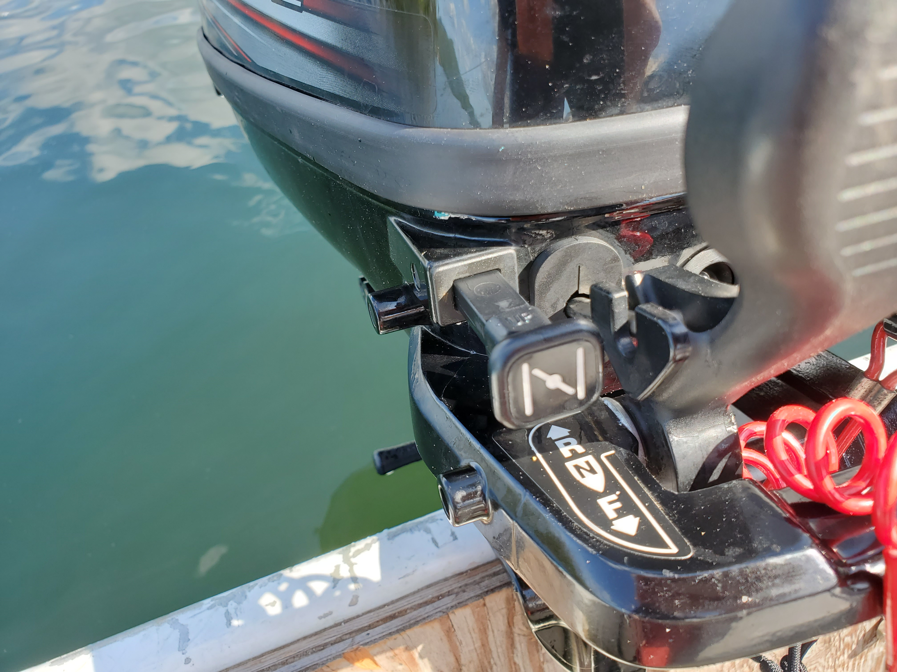
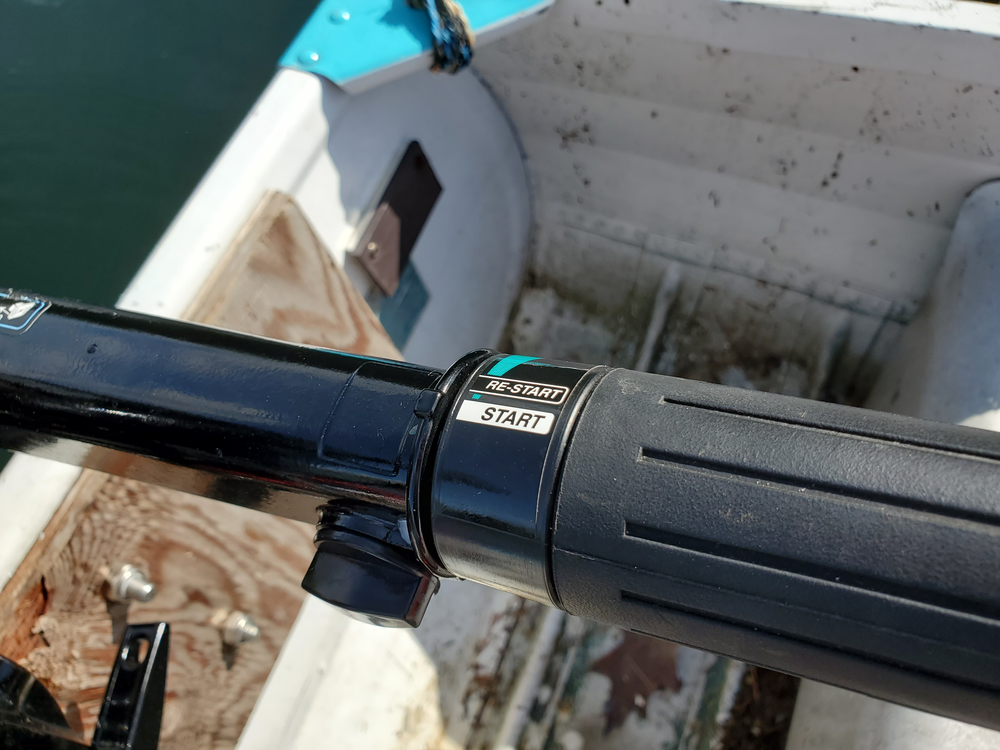
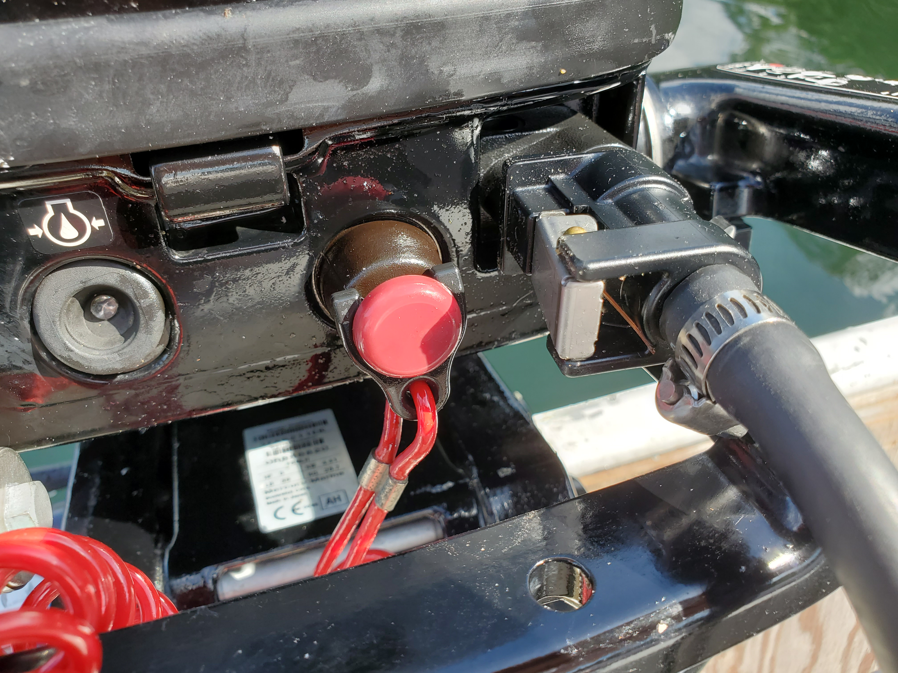
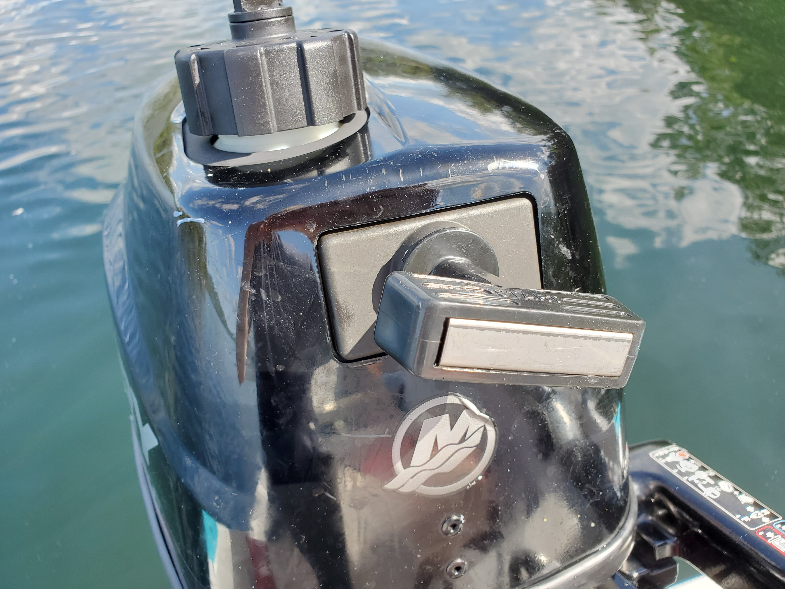
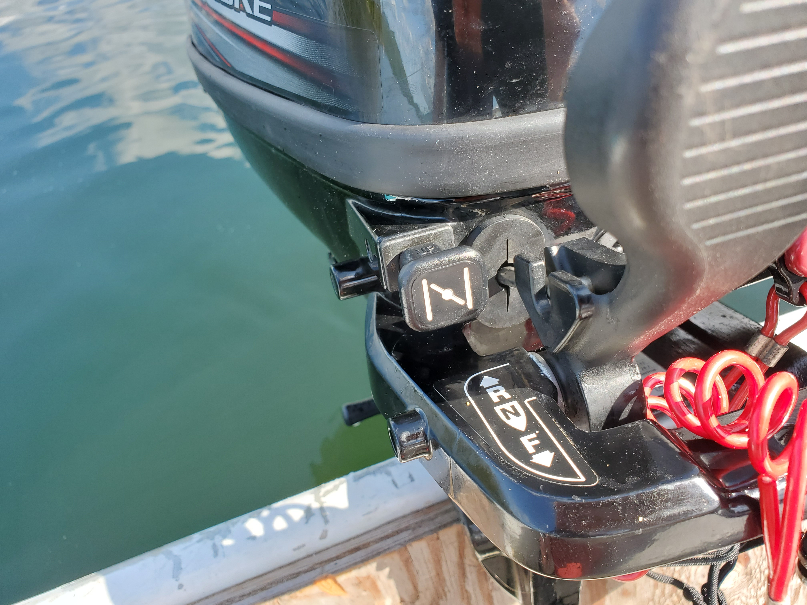
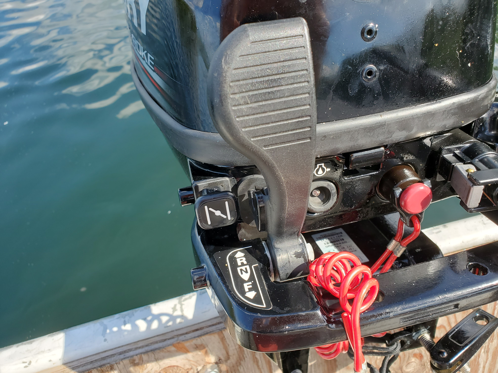
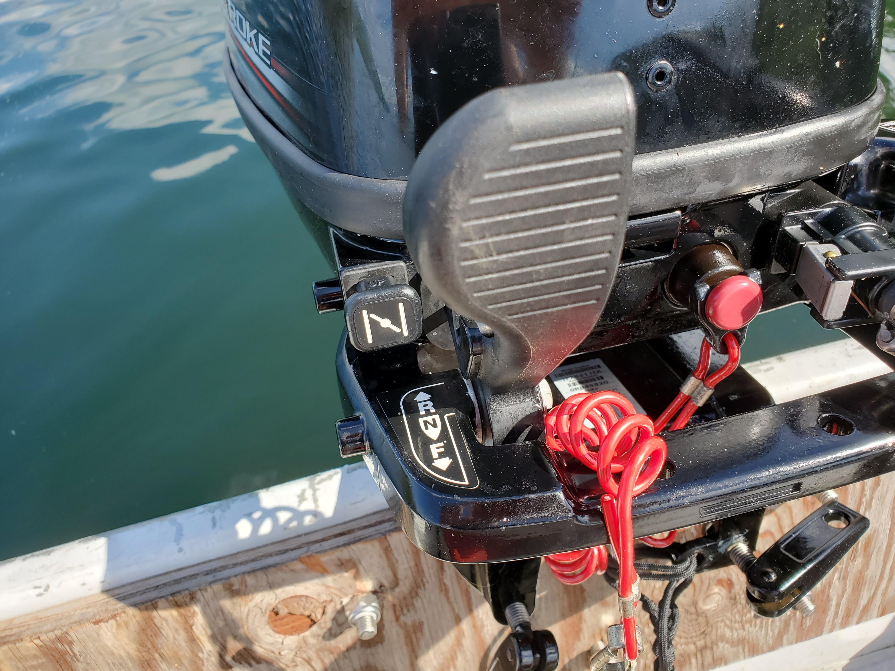
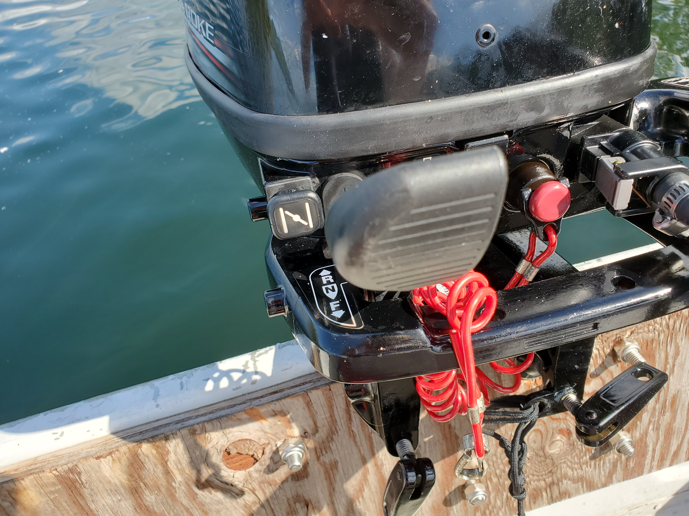
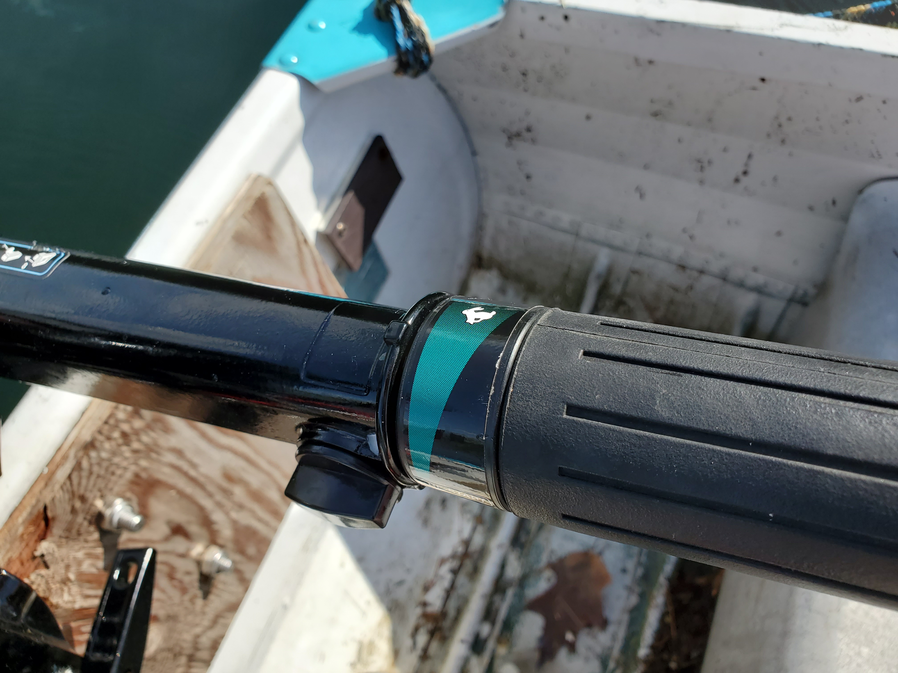

Boating is another activity that can seem daunting and expensive, but with a little bit of prior knowledge, it can be easy and expensive.
While the motorboat rabbit hole is deep, I'm going to stick with what I know: small fishing boats with low-power, outboard motors. I currently own a
twelve-foot aluminum boat bought from a sears catalog in 1966. This boat was originally fitted with a Johnson outboard from the 1950's, but it had a
few minor issues that made it unusable with my configuration. Due to this, we started looking around and the local marina happened to have a 7.5 hp
Kawasaki outboard that, unlike the 50's Johnson, actually turned on. This motor was the perfect power for my little boat and it ran great until it
fell off the back and sunk forty feet to the bottom of the lake. Learning our lesson from this initial, costly mistake, we retrofitted the boat with
a better motor mount and made extra sure the new 4 hp 1973 Johnson outboard was secured with 550 paracord. This motor also ran great until it didn't.
This one would have the tendency to completely cut out in the middle of the lake and refuse to turn back on, forcing me to embarrassingly row back to
shore. Four horsepower was also not nearly enough to get me across the lake in a single, time efficient trip. This leads to the fourth and final motor
that is now mounted to the back of my boat. A 6 hp, 2019, Mercury outboard that runs great and is guaranteed to start up on the first or second pull.
It has the perfect amount of power and can get the boat up to a respectable 17-18 mph. By the amounts of motors that I've owned, it can be concluded
that I have a decent amount of experience with boat motors and minor service of them. That being said, I would like to share a step-by-step guide on
how to start nearly every boat motor, demonstrated on my current motor.
To start the motor, you should first figure out what the motor was previously doing. If the motor wasn't running or was running more than 15 minutes ago, the motor's most likely going to need a cold start. Otherwise, if the motor was running, you can safely skip to step 4. In any case, starting the motor first requires priming the primer bulb to initiate fuel flow into the motor. If the fuel line isn't already connected, make sure to do that first. This process is different for every gas canister, priming bulb, and fuel connecter, so you should probably consult a manual on this one. Once the primer bulb is firm and gas can is all set, you can begin the process of starting the motor.

For a cold start, the choke must be extended. This modifies the pressure inside the engine and changes the fuel-air ratio inside the motor. Usually a choke is named as such because it "chokes" the air out of the engine and introduces a more fuel-rich environment, which is ideal for a dry engine starting cold.

A cold start also requires minimal throttle with most motors having a marking denoting the start position. Ensure the throttle is in the correct position before moving onto the fun part: actually starting the motor.
 
Before pulling the cord to start the motor, ensure that the emergency stop is not activated. All this does is prevent the spark plugs from producing a spark, but it'll be really annoying if you try to start the motor, flood it, and only then realize that the emergency stop was engaged the entire time. If you are not cold-starting the motor, review the image associated with step three and set the throttle a little higher than the start position, or, if it's marked, to the restart position. Once everything seems in order, you can give the pull cord a sharp yank inline with the orifice containing the cord. Do not tug the cord off to the side. The motor should start and from here the next steps are critical to maintain rpms.

Once the motor has started, wait for it to rev up, then slowly push in the choke until the rpms drop and the motor is holding a steady tone. The motor is fully functional at this point. If the motor was not cold-started, slowly turn the throttle all the way down until the motor holds a steady tone.
   
When the motor is on, operation is extremely simple. There are really only three controls. These include the shifter, throttle, and steering. The steering is the most simple. It's completed by just pulling or pushing on the throttle handle. The throttle control is also extremely easy. All it requires is the throttle handle to be twisted in order to raise or lower the throttle. The third, and final, control is comparatively difficult, yet it's still objectively easy. The shifter may only be shifted into gear at the lowest throttle value. It can be shifted into neutral at any time, but it's still advised to lower the throttle first. When the shifter paddle is furthest from you, the motor is in reverse, when it appears to be between states, it's in neutral, and when it's closest to you, it's in forward.
The rest of the motor control is intuitive. Enjoy the ride.